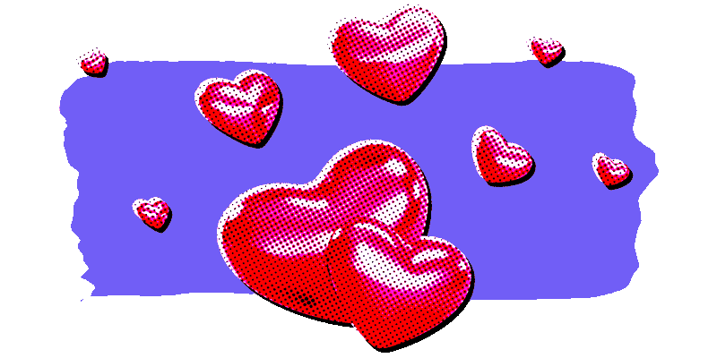

Design tokens from the clone, not a live timeline.
Overview
Tokens and components extracted from
ccrsxx/twitter-clone.
Open this file directly or run python3 -m http.server from this folder.
The clone ships Twitter Chirp (400 / 500 / 700 / 800 and Extended Heavy).
This showcase does not redistribute those files and uses
system-ui, "Segoe UI", sans-serif instead.
Color
Background
--main-background #000000 / #16212C / #FFFFFF--main-search-background #202327 / #273340 / #EFF3F4--main-sidebar-background #16181C / #1E2732 / #F7F9F9Text
--text-primary #E7E9EA / #0F1419--text-secondary #71767B / #536471Border
--border #2F3336 / #EFF3F4--reply-line #333639 / #CFD9DEAccent
--accent-blue #1D9BF0--accent-yellow #FFD500--accent-pink #F91A82--accent-purple #7857FF--accent-orange #FF7A00--accent-green #00B87A--twitter-icon #D6D9DB--image-preview-hover #272C30Danger
--accent-red #F4212EType
Display 20 / 700 — Home, sidebar
Title 18 / 700 — Tweet CTA
Body 16 / 400 — tweet text
Secondary 14 / 400 — @handle · 2h
Space
4px grid. Tweet padding 12px 16px. Avatar gap 12px. Icon pad 12px. Follow pad 6px 16px.
12×16
Controls
Hover / focus each control. Tokens: --main-accent, --text-primary / 10, --accent-red / 10.
What's happening?
Icons
Distilled from ccrsxx/twitter-clone@62a9588 plus extra live x.com glyphs. Default logo stays TwitterIcon (bird). XLogoIcon is the geometric X-mark, not a logo swap. Copy from showcase/icons/. Do not invent paths or npm install Heroicons.
AdsIconBusinessIconCommunitiesIconContentDisclosureIconCreatorStudioIconSpaceIconAutoIconFocusModeIconGrokHistoryIconMicIconPrivateIconViewsIconAppleIconArchiveBoxXMarkIconArrowLeftIconArrowPathIconArrowPathRoundedSquareIconArrowRightIconArrowRightOnRectangleIconArrowUpRightIconArrowUpTrayIconArticlesIconBars3BottomLeftIconBellIconBookmarkIconBookmarkSlashIconCalendarDaysIconCameraIconChartBarIconChartPieIconChatIconChatBubbleBottomCenterTextIconChatBubbleOvalLeftIconCheckBadgeIconCheckIconChevronDownIconChevronRightIconCog8ToothIconEllipsisHorizontalCircleIconEllipsisHorizontalIconEnvelopeIconExclamationTriangleIconFaceSmileIconFeatherIconGifIconGlobeAmericasIconGoogleIconGrokIconHashtagIconHeartIconHistoryIconHomeIconLinkIconMagnifyingGlassIconMapPinIconMoneyIconPaintBrushIconPhotoIconPinIconPinOffIconPlusIconPollIconPremiumIconQuestionMarkCircleIconSparklesIconSpinnerIconTrashIconTriangleIconTwitterIconUserGroupIconUserIconUserMinusIconUserPlusIconXLogoIconXMarkIconPatterns
Home
What's happening?
The thread line is --reply-line at 2px.
Trends for you
Design tokens
Heroicons
Show moreWho to follow

0 / 50
13 / 30
0 / 50
Name can't be blank
Delete Tweet?
This can’t be undone and it will be removed from your profile, the timeline of any accounts that follow you, and from Twitter search results.
Something went wrong. Try Loading.

@alice hasn't liked any Tweets
When they do, those Tweets will show up here.
Alice
Edit profile
Liked by
@alice hasn't liked any Tweets
When they do, those Tweets will show up here.
Happening now.
or
By continuing, you agree to our Terms of Service, Privacy Policy and Cookie Use.
See what's happening
Select an option below:
or
Log in or sign up for X
See what's happening and join the conversation
or
X
15.7K posts
08:44:53
Tweet
Alice
@alice
Design tokens from the clone, not a live timeline.
6:19 AM · Sep 16, 2026 · 699K Views
Tweet your reply
Today's News
SpaceXAI engineers build a company in three days
Design tokens stay on the clone pin
Notifications
Bob followed you
New post notifications for @alice
Search filters
People
Location
Ask a question
Poll length
Everyone can reply
Is this post relevant to your search?
Communities
独立开发者
Discover new Communities
Customize your view
These settings affect all the Twitter accounts on this browser.
At the heart of Twitter are short messages called Tweets — just like this one — which can include photos, videos, links, text, hashtags, and mentions like @twitter.
Color
Background
Happening now
Join Twitter today.
or
Already have an account?
Alice@alice
Bob
@bob Follows you
Building in public from the clone snapshot.
@missing
This account doesn’t exist
Try searching for another.
Grok
Ask anything
Meet Grok Bot
AI teammates you can give real work to. Bots sign in to your tools, use them just like you do, and come back with finished work.
Premium
Verified since February 2026
Quick access
More benefits
Upgrade to unlock
Image 2.0 is here
X Premium users have extended access to our most powerful media generator.
Go ad free
Enjoy zero ads with Premium+
Articles
This is where you write
Continue a draft or create a new Article